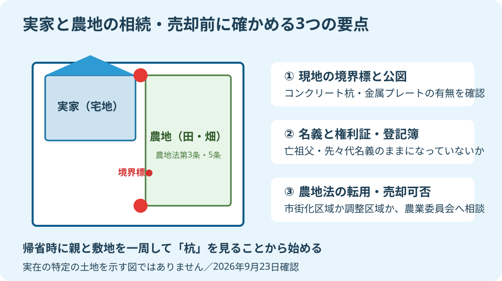

9月の秋分の日は、お彼岸の墓参りを兼ねて実家へ久しぶりに親族が集まる大切な節目です。仏壇に手を合わせ、昔話に花を咲かせる時間はかけがえのないものですが、実家をどう維持し、誰が引き継ぐかという現実の段取りについても、元気なうちに顔を合わせて話しておく価値があります。
大石浩之（磐田市／不動産業）です。宅地建物取引士として、磐田市や袋井市、森町で数多くの実家じまいや相続、不動産売却の相談を受けてきました。本記事では、秋分の帰省という絶好の機会に、家族で揉めずに確認しておきたい実家・農地の相続や境界確認の具体策を整理します。法務局や磐田市の最新制度を確認した日は2026年9月23日です。
秋分の帰省時に家族で確かめたい実家の登記と名義
実家の相続について話し合う際、最初につまずくのが「そもそも誰の名義になっているか分からない」という点です。亡くなった祖父の名義のまま数十年が経過していたり、敷地の一部だけが親族の共有になっていたりと、登記簿上の権利関係が複雑になっているケースは珍しくありません。
2024年4月1日から、不動産の相続登記が法律で義務化されました。相続によって不動産を取得したことを知った日から3年以内に登記を申請しなければならず、正当な理由のない不履行には過料の対象となる規定も設けられています。過去の相続で名義変更が滞っている物件も対象に含まれます。
帰省した際にまず手にとってほしいのが、毎年春に磐田市役所から親御さん宛てに届く「固定資産税・都市計画税の納税通知書（課税明細書）」です。この明細書には、所有している土地の所在、地番、地目、地積、固定資産税評価額が一覧で記載されています。権利証や登記済証をタンスの奥から探すよりも、まずはこの納税通知書を確認するほうが手早く全体像を把握できます。
もし手元に通知書が見当たらない場合は、市役所の窓口で「名寄帳（なよせちょう）」を取り寄せる方法があります。名寄帳を見れば、その市内で親御さんが所有するすべての不動産が把握できるため、私道の一角や遠方の小さな山林といった見落としがちな資産の有無まで確認可能です。
磐田の農地・山林を含む相続でつまずきやすい点
磐田市や遠州地域の実家では、宅地だけでなく田や畑、果樹園などの農地、あるいは裏山の山林を合わせて所有しているご家庭が非常に多く見られます。ここで注意しなければならないのは、宅地と農地では法律上の扱いがまったく異なるという点です。
農地は農地法という法律によって厳格に保護されており、農業を営まない親族が簡単に売却したり、勝手に住宅用地へ転用したりすることはできません。相続によって農地を取得した場合、法務局での相続登記とは別に、農地が存在する市町村の農業委員会へ「農地法第3条の3の規定による届出」を提出することが義務付けられています。磐田市でも、相続発生を知った後、遅滞なく届出書を農業委員会事務局へ提出する必要があります。
| 確認対象 | 確認する公的書類・窓口 | 主な注意点・手続き |
|---|---|---|
| 実家の宅地・建物 | 登記事項証明書、納税通知書 | 2024年施行の相続登記義務化、3年以内の登記申請 |
| 田・畑（農地） | 農地台帳、農業委員会 | 農地法第3条の3届出、草刈りや水路維持の管理負担 |
| 敷地境界・境界標 | 地積測量図、公図（14条地図） | 隣接地との越境物、コンクリート杭・金属プレートの有無 |
親世代が農業をやめた後、近隣の農家さんや農業生産法人に小作や作業委託をお願いしている場合もあります。どのような約束で貸しているのか、口頭のやり取りだけになっていないか、水利組合の役員や維持費の負担はどうなっているかを、親が元気なうちに聞き取っておくことが後のトラブルを防ぎます。
「農地は売れないからいらない」と相続放棄を考える方もいますが、特定の土地だけを選んで放棄することは現行法ではできません。放棄する場合は実家の建物や預貯金も含めた全遺産を家庭裁判所で放棄することになります。だからこそ、どの土地にどんな制約があるのかを整理することが大切です。
境界標と公図の確認｜売却や管理のトラブルを防ぐ
実家の敷地や農地で最も揉めやすいのが「境界」の問題です。昔から住んでいる土地ほど、隣の家との境目が曖昧で、「昔からの生け垣の真ん中が境だ」「用水路の縁あたりが境界線だ」といった曖昧な認識で過ごされている例が目立ちます。
しかし、将来実家を解体して更地で売却したり、建て替えたりする際には、隣接する土地の所有者と立ち会って境界を確定させる「確定測量」が必要になることが一般的です。その際、敷地の角にコンクリート杭や金属プレートといった「境界標」がしっかりと残っているかどうかが作業の進み具合を大きく左右します。

帰省の際には、ぜひ運動靴を履いて敷地の外周をぐるりと一周歩いてみてください。ブロック塀の角や道路との境目に、十字の刻まれた杭やプレートがあるでしょうか。長年の風雨や雑草、土砂の堆積によって埋もれていることもよくあります。親御さんと一緒に「ここがうちの境目だよ」と現地を確認しながら、スマホのカメラで境界標の写真を撮って記録に残しておくだけでも、非常に価値のある資料になります。
あわせて、隣家の樹木の枝がこちらの敷地へ越境していないか、逆に実家の庭木や雨樋が隣の敷地へはみ出していないかも目視で確かめておきましょう。民法の改正により、越境された側の催告や自力切除のルールも明確化されましたが、円満な近所付き合いを続けるためには、家族が集まるタイミングで剪定などの手入れ計画を立てることが一番の予防策です。
遺産分割や売却を急ぐ前にやっておくべき資料集め
実家の将来について話し合うとき、いきなり「この家をいくらで売るか」「誰がいくらもらうか」というお金の話から入ると、親族間で感情的な衝突が起きやすくなります。親御さんにとっても、自分が長年暮らしてきた家を処分する話は寂しく、反発を招く原因になりかねません。
私は、話し合いの順序として「まず資料を集めて事実を共有する」ことから始めるようアドバイスしています。感情論ではなく、客観的な事実を机の上に並べることで、家族全員が落ち着いて同じ現実を見つめることができます。
- 実家の権利証（登記済証または登記識別情報通知）の保管場所を確認する。
- 市役所の固定資産税課税明細書、または名寄帳の控えを1部コピーしておく。
- 法務局で登記簿謄本（登記事項証明書）と公図、地積測量図を取得する。
- 農地がある場合は、磐田市農業委員会で農地台帳の記載内容を確認する。
前回の記事磐田で都市計画道路にかかる土地を売る前の確認でも触れたように、都市計画法上の制限や道路の予定線など、専門的な調査が必要な項目もあります。また、秋彼岸の実家片付けで探したい書類と査定準備で解説した建築確認済証や検査済証、過去のリフォーム履歴も、建物の安全性を測る貴重な手がかりです。
磐田・袋井で介護と不動産を一元相談できる窓口へ
実家の相続や空き家問題は、単なる不動産取引の枠組みにとどまりません。その根底には、高齢になった親御さんの生活支援や、介護施設の入居検討、実家に一人で住み続けることへの健康不安といった介護の課題が密接に結びついています。
介護費用の捻出のために実家をどう活用するか、施設へ住み替えた後の空き家管理をどうするかといった問題は、不動産会社だけに相談しても、介護支援の専門家だけに相談しても、なかなか全体最適な答えが見つかりにくいものです。
富士ヶ丘サービスは、磐田市・袋井市・森町を中心に、介護施設の運営から不動産事業を始めた地域密着の会社です。宅地建物取引士としての不動産実務はもちろん、介護保険制度や高齢者の住み替え事情に精通したスタッフが揃っており、家族の暮らしと資産管理を一体で支える相談窓口を整えています。
秋分の帰省で実家の状況を確かめたら、まずは無理のない範囲で家族の希望を整理してみてください。一人で抱え込まず、早い段階で専門窓口へ声をかけることが、将来の不安を安心へと変える一番の近道です。税務・登記・相続の法的な個別判断は司法書士・税理士・弁護士などの専門家と連携して対応いたします。